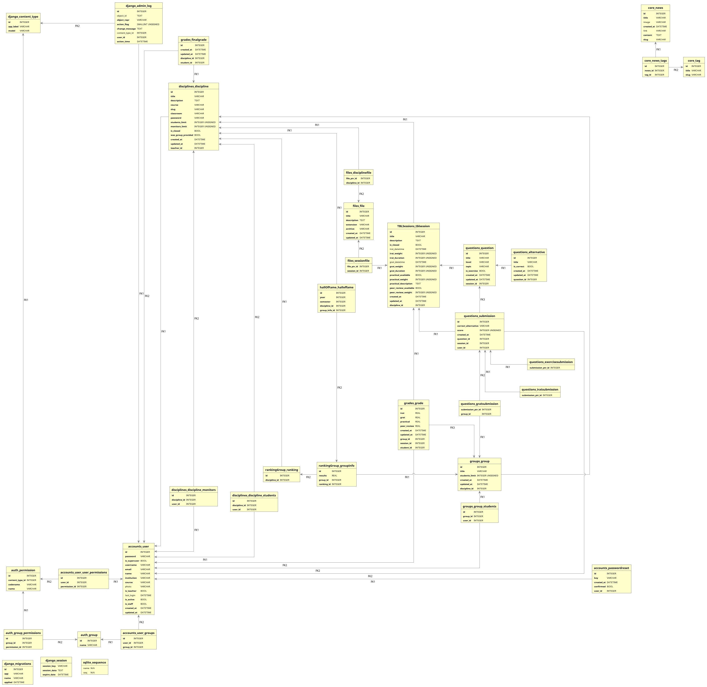

Artefatos para documentação oficial
Nesta página encontra-se todos os artefatos da documentação oficial TBL que foram atualizados decorrente da ciração do aplicativos:
- Group Ranking
- Hall of Fame
Product Backlog
Diagrama de classe

MER
Entidades e Atributos
GroupRanking:
| Atributo | Tipo | Característica | Descrição |
|---|---|---|---|
| discipline_id | Discipline | obrigatório | Disciplina na qual o Ranking de grupos pertence. |
GroupInfo:
| Atributo | Tipo | Característica | Descrição |
|---|---|---|---|
| results | float | automático, padrão 0 | Nota de desempenho do grupo com a média de todas as suas avaliações iRAT, gRAT, prática e em pares. |
| group_id | Group | obrigatório | Grupo na qual estas informações pertencem. |
| ranking_id | GroupRanking | obrigatório | Ranking de grupos no qual este GroupInfo está vinculado. |
HallOfFame:
| Atributo | Tipo | Característica | Descrição |
|---|---|---|---|
| year | inteiro positivo | obrigatório | Ano no qual este objeto do HallOfFame pertence. |
| semester | inteiro positivo | opcional, padrão 0 | Semestre no qual este objeto do HallOfFame pertence. |
| discipline_id | Discipline | obrigatório | Disciplina no qual este objeto do HallOfFame pertence. |
| group_info_id | GroupInfo | obrigatório | GroupInfo vinculado a este objeto do HallOfFame. |
Relacionamentos entre classes
GROUPRANKING tem DISCIPLINE:
- Um ranking de grupos deve ter uma disciplina, e uma disciplina pode ter vários rankings de grupos.
- Cardinalidade: Nx1
GROUPINFO tem GROUP:
- Uma informações de um grupo deve ter um grupo, e um grupo deve ter uma informações de um grupo.
- Cardinalidade: 1x1
GROUPINFO tem GROUPRANKING:
- Uma informações de um grupo deve ter um ranking de grupo, e um ranking de grupos pode ter várias informações de grupos.
- Cardinalidade: Nx1
HALLOFFAME tem DISCIPLINE:
- Um hall da fama deve ter uma disciplina, e uma disciplina pode ter vários halls da fama.
- Cardinalidade: Nx1
HALLOFFAME tem GROUPINFO:
- Um hall da fama deve ter uma infromações de um grupo, e uma informações de um grupo pode ter um hall da fama.
- Cardinalidade: 1x1
GROUPINFO pertence HALLOFFAME:
- Uma informações de um grupo pode pertencer a um hall da fama, porém um hall da fama pode ter várias infromações de um grupo.
- Cardinalidade: Nx1
HALLOFFAME pertence DICIPLINE:
- Um hall da fama pertence a uma disciplina, porém uma disciplina pode ter vários halls da fama.
- Cardinalidade: Nx1
GROUPRANKING pertence DISCIPLINE:
- Um ranking de grupos peetence a uma disciplina, porém uma disciplina pode ter vários rankings de grupos diferentes.
- Cardinalidade: Nx1